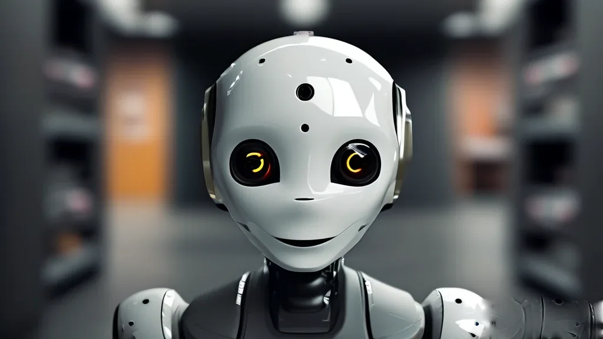
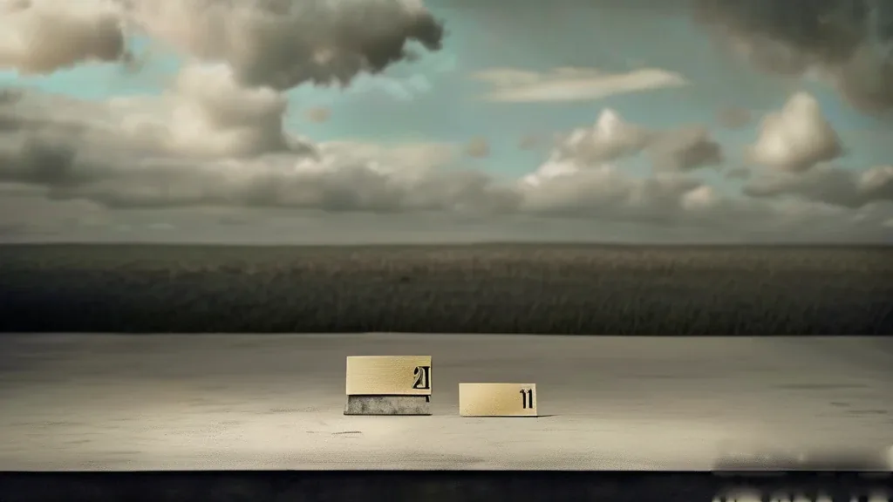
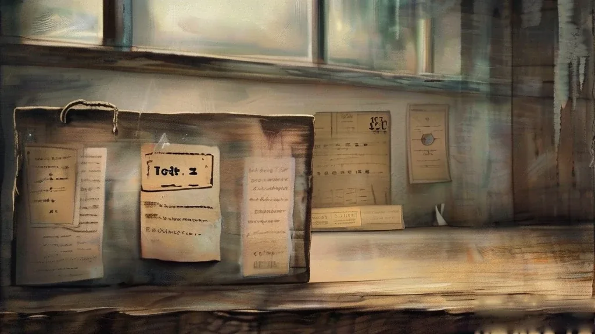
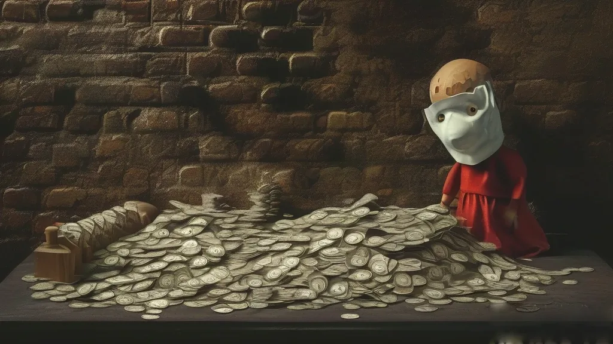

圖片由 AI輔助創作Image by AI
【鄭哥點評】欄目：鄭哥博客點評｜日期：2026-11-14
# AI 第一次貼上價簽 七篇晨報我重讀了一次。本來想搵「今個星期最刺激那條」，結果搵到另一樣嘢：同一個問題，喺一週之內被問咗三次 —— AI 到底值幾多錢。 以前呢個問題冇答案，只有故事。今個星期唔同：有人開始報價，而且報嘅唔止一個價，係三個互相對得上的價。我判斷這一週係這輪 AI 由「講故事」轉「算賬」的分界線，而分界線唔係某一條新聞，係「有冇價簽」。
圖片由 AI輔助創作Image by AI
一、同一家公司，一個星期報咗三個價
11 月 8 日，Anthropic 遞交修訂版 S-1，估值預期由 2 萬億降到 1.5 萬億至 2 萬億，最多募資 1000 億；前九個月營收 332 億、同比增 12 倍，1040 億淨虧裡面有 943 億係紙面虧損（鈦媒體）。同一個星期，OpenAI 那筆 300 億融資只落地 110 億。
11 月 11 日路演開價：發行 8.25 億股、每股 70 至 78 美元，按上限募資約 643.5 億美元；谷歌同英偉達各出 100 億領投，七家產業鏈夥伴合計認購 260 億。發行估值約 1 萬億，比半個月前遞表時的 1.5 萬億低了三成（搜狐）。
11 月 13 日招股書出來，數字又反過來：三季度營收 169.56 億美元、同比增 1127%，年化 810 億，年付超過 10 萬美元的客戶有 1.19 萬家；11 月 18 日定價、19 日掛牌，因為認購過熱，承銷商開始考慮抬價，估值再衝 1.5 萬億（36氪）。
同一個星期，同一家公司，1.5 萬億 → 1 萬億 → 1.5 萬億。我判斷呢三個數唔係「市場情緒反覆」，係一個正常不過的過程：遞表寫的是故事價，路演報的是發行價，招股書披露的是經營數字。三個價都有人信，只係信的根據唔同。以前一級市場只有第一個價；今個星期之後，後面兩個價會一直跟住每一家 AI 公司。
來源：36氪《Anthropic上市倒計時，萬億估值能撐得起嗎？》，2026-11-13｜https://www.36kr.com/p/4065011528586371

圖片由 AI輔助創作Image by AI
二、第二張價簽係利息，唔係增速
11 月 10 日 CoreWeave 三季報：營收 36.61 億、同比增 168%，收入積壓升到 1325 億，全年指引上調至 130 億至 133 億。但淨利息支出 8.46 億，係調整後營業利潤 3.79 億的兩倍多，GAAP 淨虧 7.09 億，全年資本開支仍要 370 億至 390 億（華爾街見聞）。
再上游一環，高盛的數字係：五家超大規模雲商一星期發債 670 億美元，年內累計 2960 億，已超全年預測上限，AI 新債溢價 18 個基點，接近垃圾債（東方財富）。再落一環，美國 10 月 CPI 環比升 0.4%、核心升 0.3%，雙雙高於預期，市場對 12 月加息 25 個基點的定價接近 100%（鳳凰網）。
我判斷，當行業的錢由股權轉去債權，「估值」就由願景問題變成覆蓋倍數問題。投資者可以接受一個講唔清的故事，但唔可以接受利息覆蓋唔到。CoreWeave 的需求唔假 —— 1325 億積壓擺在那裡；問題係每賺 3.79 億要付 8.46 億利息，呢條等式唔靠增長解決，只靠再融資解決。而再融資的價錢，今個星期已經由 18 個基點同接近 100% 的加息定價講咗。
來源：鳳凰網《美國10月CPI通脹再度超預期，市場押注美聯儲12月加息已成定局》，2026-11-11｜https://finance.ifeng.com/c/8xwpDevWPOR

圖片由 AI輔助創作Image by AI
三、第三張價簽係客戶集中度
11 月 11 日，做 AI 數據同評估的 Mercor 完成 7.5 億美元 D 輪，投後估值 200 億、一年翻倍，英偉達、Salesforce、Zoom 都入了股；公司自稱年化收入 30 億，但 91% 仍來自 OpenAI 同 Anthropic（鳳凰網）。
對照 Anthropic 那邊 1.19 萬家年付 10 萬美元以上的客戶，兩組數字放埋一齊，我判斷有一件事被忽略了：終端客戶正在分散，中間層卻在集中。賣數據、賣評估、賣算力的公司，收入往往集中喺兩三個大客戶身上；模型公司自己反而有上萬家企業客。這條鏈的風險係串聯，唔係並聯 —— 任何一家大客戶縮預算，下面幾層一齊震。
更麻煩的是呢層生意的定性。評估、標註、後訓練，本質係做裁判：幫客戶判斷邊個模型好用、邊個版本退步。但如果裁判的收入九成來自被評的兩間公司，佢就有一個講唔出口的兩難 —— 判得嚴，明年冇單；判得鬆，自己變成廣告位。我判斷這門生意會長期存在，但它的毛利率同它的獨立性係互相拉扯的，唔可能兩樣都拿滿。買方（尤其係準備上市、要對外證明模型能力的那幾家）遲早要面對同一個問題：你需要一個唔靠你養的裁判，但市場上冇。
來源：36氪《Anthropic上市倒計時，萬億估值能撐得起嗎？》，2026-11-13｜https://www.36kr.com/p/4065011528586371

圖片由 AI輔助創作Image by AI
四、價簽貼上之後，錢由「造模型」移去「定標準」
11 月 12 日百度世界開幕，全場最實在的一件貨係大模型交易平台「詞元所」，官方稱日均 Token 破 7000 億（觀點新媒體）。11 月 13 日消息，美團開放 LongCat-2.5 權重：MoE 總參 1.6 萬億、MIT 許可，連 W4A4 量化權重同國產 NPU 部署方案一齊給（觀察者網）。同一個星期，企業級存儲醞釀新一輪漲價，提價函未下發、渠道價先動，一位海力士代理講「每天都在漲」（藍鯨新聞）。
三件事方向相反，我判斷講的係同一件事：模型本身正在變成免費品，價錢轉移到三個地方 —— 算力（存儲同卡）、分發（交易平台、央企渠道）、標準（誰定 Token 的計價方式）。免費的權重，加上有牌價的 Token，等於把「模型能力」這條曲線壓平，同時把「成本」這條曲線抬起來。做應用的人要接受一個事實：毛利唔再由你的代碼決定，由上游的合約價同牌價決定。
來源：藍鯨新聞《存儲廠商醞釀新一輪漲價 先漲的是企業級》，2026-11-11｜https://m.sohu.com/a/1100108113_121925623
圖片由 AI輔助創作Image by AI
六、鄭哥點評
七篇讀完，我最記得唔係任何一個跑分，而係三個數字排在一起：1.5 萬億、1 萬億、1.5 萬億。
我判斷 11 月 18 日 Anthropic 定價那一刻，就係這輪 AI 的分水嶺 —— 唔係因為價高或價低，而係因為從此每一家 AI 公司的融資、每一份算力合同的利息、每一個應用的 API 成本，都有咗可比對的參照。冇參照的時候，講故事的人贏；有參照之後，算賬的人贏。
對我自己套工作流，結論好直接：唔好再用「以後會更便宜」做預算的前設。這一週七篇裡面，有六篇講的都係同一件事的不同側面 —— 錢變貴、卡變貴、電同地變貴、客戶變集中。模型便宜下來那部分，早就被這四樣收返去。價簽貼上之後，唔會再有免費的便宜可執。
圖片由 AI輔助創作Image by AI
\[Zheng Ge's Take\] Column: Zheng Ge's blog commentary | Date: 2026-11-14
I went back through all seven morning briefings for the week. I was looking for the most dramatic story; what I found was something else — the same question asked three times in seven days: what is AI actually worth? Previously that question had no answer, only a narrative. This week was different: someone started quoting a price, and not just one price — three prices that can be checked against each other. My reading is that this week marks the line between "telling a story" and "doing the arithmetic" for this cycle of AI, and the line is not any single news item. It is whether a price tag exists.
圖片由 AI輔助創作Image by AI
One company, three prices in one week
On 8 November Anthropic filed an amended S-1, with the expected valuation cut from US$2 trillion to US$1.5–2 trillion and a maximum raise of US$100 billion; revenue for the first nine months was US$33.2 billion, up 12 times year on year, and US$94.3 billion of the US$104 billion net loss was paper losses (TMTPost). In the same week, only US$11 billion of OpenAI's US$30 billion round actually closed.
On 11 November the roadshow quoted a price: 825 million shares at US$70–78 each, raising up to about US$64.35 billion; Google and Nvidia each led with US$10 billion, and seven industry partners subscribed US$26 billion between them. The issue valuation was about US$1 trillion — 30% below the US$1.5 trillion of the filing half a month earlier (Sohu).
On 13 November the prospectus came out and the numbers turned again: third-quarter revenue of US$16.956 billion, up 1,127% year on year, an annualised US$81 billion, and 11,900 customers paying more than US$100,000 a year. Pricing is set for 18 November with listing on the 19th, and with subscription demand this hot, underwriters are considering raising the price, pushing the valuation back toward US$1.5 trillion (36Kr).
One company, one week: 1.5 trillion, then 1 trillion, then 1.5 trillion again. I do not read those three numbers as market mood swinging back and forth; I read them as an entirely normal sequence. The filing carries the story price, the roadshow quotes the issue price, and the prospectus discloses the operating numbers. All three prices have believers — they just believe on different evidence. Previously the private market only had the first price; after this week, the other two will follow every AI company around.
Sources: TMTPost, "Anthropic Advances Its IPO: US$1.5 Trillion Repricing of the AI Supply Chain", 8 Nov 2026; Sohu, "New Valuation 'Halved'? AI Giant's IPO Begins Roadshow", 11 Nov 2026; 36Kr, "Anthropic's Listing Countdown: Can a Trillion-Dollar Valuation Hold Up?", 13 Nov 2026.
Source: 36氪《Anthropic上市倒計時，萬億估值能撐得起嗎？》，2026-11-13 | https://www.36kr.com/p/4065011528586371
圖片由 AI輔助創作Image by AI
The second price tag is interest, not growth
On 10 November CoreWeave's third-quarter report showed revenue of US$3.661 billion, up 168% year on year, backlog up to US$132.5 billion, and full-year guidance raised to US$13.0–13.3 billion. But net interest expense was US$846 million — more than twice adjusted operating profit of US$379 million — with a GAAP net loss of US$709 million, and full-year capex still requiring US$37–39 billion (Wallstreetcn).
One link upstream, Goldman Sachs put the numbers this way: five hyperscalers issued US$67 billion of debt in a single week, US$296 billion year to date, already above the full-year forecast ceiling, with new AI debt carrying an 18-basis-point spread, close to high yield (East Money). One link further down, US October CPI rose 0.4% month on month with core up 0.3%, both above expectations, and the market priced a 25-basis-point December hike at close to 100% (Phoenix Finance).
My judgement: once the industry's money shifts from equity to debt, "valuation" stops being a question about vision and becomes a question about coverage ratios. Investors will tolerate a story you cannot quite tell them; they will not tolerate interest that cannot be covered. CoreWeave's demand is not fake — a US$132.5 billion backlog is sitting right there. The problem is that every US$379 million of profit carries US$846 million of interest, and that equation is not solved by growth; it is solved by refinancing. And the price of refinancing was already quoted this week, by 18 basis points and a near-certain hike.
Sources: Wallstreetcn, "CoreWeave's Quarterly Report Staves Off AI Slowdown Fears: Revenue Up 168%, Guidance Raised, But Debt Remains High", 10 Nov 2026; East Money, "Goldman Sachs Says AI Debt Supply Pressure Is Building in Credit Markets", 8 Nov 2026; Phoenix Finance, "US October CPI Beats Expectations Again, Market Bets a December Fed Hike Is a Done Deal", 11 Nov 2026.
Source: 鳳凰網《美國10月CPI通脹再度超預期，市場押注美聯儲12月加息已成定局》，2026-11-11 | https://finance.ifeng.com/c/8xwpDevWPOR
圖片由 AI輔助創作Image by AI
The third price tag is customer concentration
On 11 November Mercor, which does AI data and evaluation work, closed a US$750 million Series D at a post-money valuation of US$20 billion, doubling in a year, with Nvidia, Salesforce and Zoom all investing. The company says it runs at a US$3 billion annualised revenue rate, but 91% of it still comes from OpenAI and Anthropic (Phoenix Finance).
Set that against Anthropic's 11,900 customers paying more than US$100,000 a year, and I think one thing gets missed: the end customers are diversifying while the middle layer concentrates. Companies selling data, evaluation and compute tend to have revenue concentrated in two or three large accounts; the model companies themselves end up with tens of thousands of enterprise customers. The risk in this chain is series-wired, not parallel-wired — when one big customer trims its budget, several layers below shake together.
What makes it messier is the nature of that layer's business. Evaluation, labelling and post-training are essentially refereeing: telling a client which model works and which version went backwards. But if nine-tenths of the referee's revenue comes from the two companies being judged, the referee faces a dilemma it cannot say out loud — call it strictly and lose next year's order; call it loosely and become an advertising slot. My judgement is that the business will be around for a long time, but its margins and its independence pull against each other, and you cannot max out both. Buyers — especially those about to list and needing to prove their model's quality to outsiders — will eventually hit the same question: you need a referee you do not pay for, and the market does not have one.
Sources: Phoenix Finance, "Mercor Raises US$750 Million Series D at a US$20 Billion Valuation", 12 Nov 2026; 36Kr, "Anthropic's Listing Countdown: Can a Trillion-Dollar Valuation Hold Up?", 13 Nov 2026.
Source: 36氪《Anthropic上市倒計時，萬億估值能撐得起嗎？》，2026-11-13 | https://www.36kr.com/p/4065011528586371
圖片由 AI輔助創作Image by AI
Once the tags are on, the money moves from "building models" to "setting standards"
On 12 November Baidu World opened, and the most tangible item on show was "Ciyuan Suo", a large-model trading platform; the company says daily tokens have passed 700 billion (Guan Dian New Media). On 13 November came word that Meituan had opened the LongCat-2.5 weights: 1.6 trillion total MoE parameters under the MIT licence, bundled with W4A4 quantised weights and a deployment recipe for domestic NPUs (Guancha). In the same week, enterprise-grade storage was preparing another round of price increases — no formal letter out yet, channel prices moving first, and one SK Hynix agent saying prices were "rising every day" (Lanjing News).
Those three point in opposite directions, but I read them as one thing: the model itself is becoming a free good, and the price is migrating to three places — compute (storage and cards), distribution (trading platforms, state-owned channel partners) and standards (whoever defines how tokens are priced). Free weights plus quoted token prices flatten the "model capability" curve while lifting the "cost" curve. Anyone building applications has to accept one fact: your margin is no longer set by your code, but by your supplier's contract price and the price board.
Sources: Guan Dian New Media, "Baidu World 2026 Launches Ciyuan Suo, Robin Li Sets Out the Smart Organisation Concept", 12 Nov 2026; Guancha, "Hard Tech Morning Brief: Huawei's New Storage System Enters Commercial Trial; JD Technology Spin-off; Meituan Open-Sources a 1.6 Trillion Parameter Model", 11 Nov 2026; Lanjing News, "Storage Makers Prepare Another Round of Price Increases, Enterprise Grade First", 11 Nov 2026.
Source: 藍鯨新聞《存儲廠商醞釀新一輪漲價 先漲的是企業級》，2026-11-11 | https://m.sohu.com/a/1100108113_121925623
圖片由 AI輔助創作Image by AI
6. Zheng Ge's Take
After seven briefings, what stays with me is not any benchmark but three numbers lined up: 1.5 trillion, 1 trillion, 1.5 trillion.
My judgement is that the moment Anthropic prices on 18 November is the watershed for this cycle — not because the price is high or low, but because from then on every AI company's fundraising, every compute contract's interest and every application's API cost has a comparable reference point. Without a reference, the storytellers win. With one, the accountants do.
For my own workflow the conclusion is blunt: stop building budgets on the assumption that things get cheaper later. Six of this week's seven briefings were about different faces of the same thing — money getting dearer, cards getting dearer, power and land getting dearer, customers getting more concentrated. Whatever the models gave back in price has already been taken by those four. Once the price tag is on, there is no free bargain left to pick up.